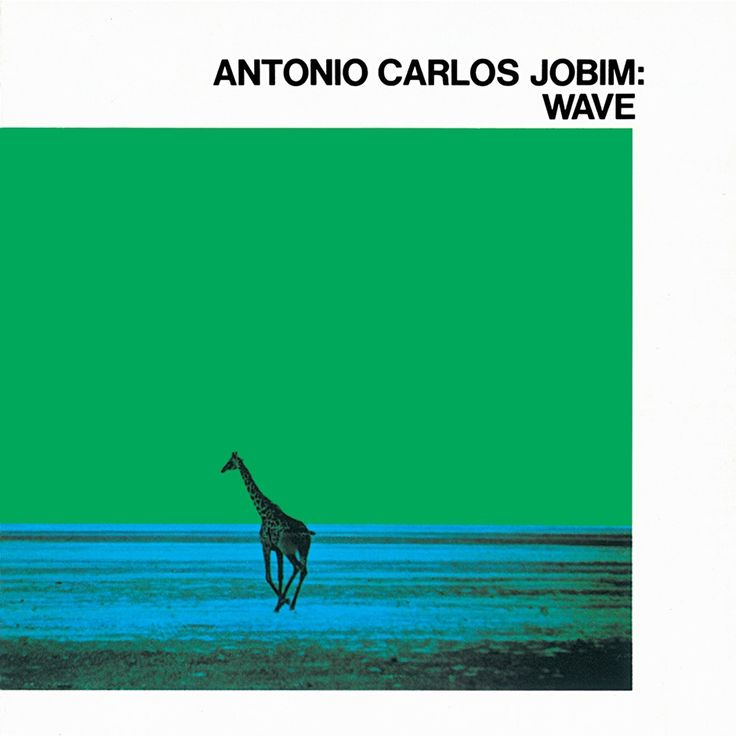

Catálogo
In Rainbows
Radiohead
2007
Rock alternativo
Un álbum innovador que combina experimentación sonora con melodías íntimas.
ComprarAtom Heart Mother
Pink Floyd
1970
Rock progresivo
La fusión de rock sinfónico y psicodelia en una de sus obras más icónicas.
Comprar

Wave
Antonio Carlos Jobim
1967
Bossa nova / Jazz
Un clásico de la bossa nova con arreglos orquestales de gran elegancia.
ComprarHeavy Weather
Weather Report
1977
Jazz fusión
Un hito del jazz fusión, con el legendario bajo de Jaco Pastorius.
ComprarElectric Ladyland
The Jimi Hendrix Experience
1968
Rock psicodélico
El disco más ambicioso de Hendrix, explosión de creatividad y virtuosismo.
ComprarMeat Is Murder
The Smiths
1985
Indie rock
Un manifiesto sonoro de The Smiths con letras críticas y memorables.
Comprar
The Velvet Underground & Nico
The Velvet Underground
1967
Rock experimental
Álbum de culto producido por Andy Warhol, piedra angular del rock alternativo.
ComprarLocura
Los Abuelos de la Nada
1985
Rock argentino
Un clásico del rock nacional con la energía irreverente de los 80.
ComprarHead Hunters
Herbie Hancock
1973
Jazz funk
Un revolucionario álbum de fusión entre jazz eléctrico y funk contagioso.
Comprar